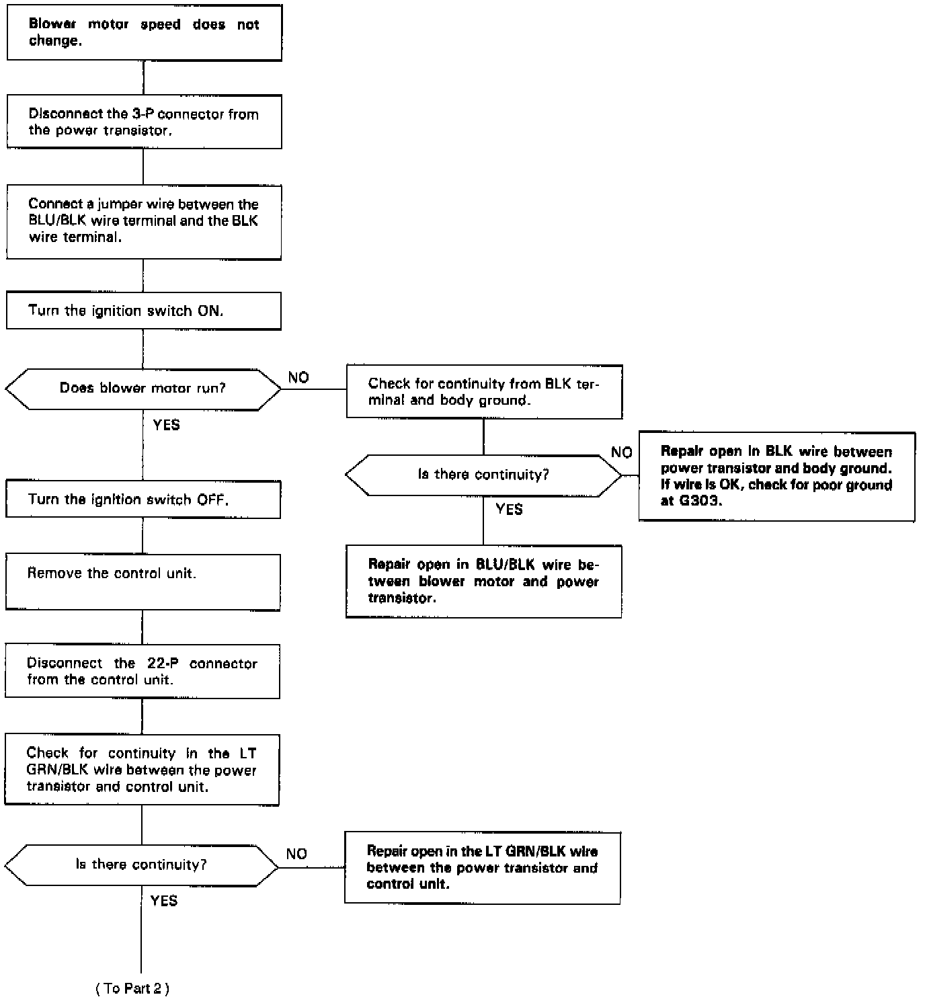
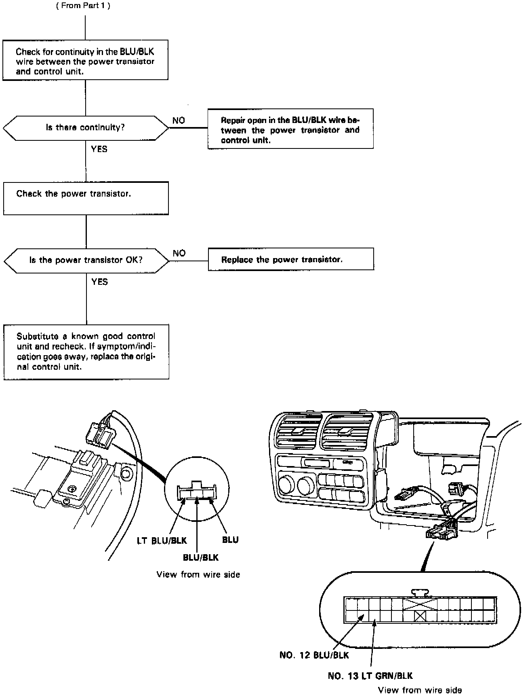

Operation CHARM
: Car repair manuals for everyone.
Home
>>
Acura
>>
1992
>>
Legend Sedan V6-3206cc 3.2L SOHC FI
>>
Repair and Diagnosis
>>
Heating and Air Conditioning
>>
Blower Motor
>>
Testing and Inspection
>>
Manual Heating and Air Conditioning - Flowcharts
>>
Blower Motor Speed Controls
Blower Motor Speed Controls
Blower Speed Controls, Part 1 Of 2:

Blower Speed Controls, Part 2 Of 2:
